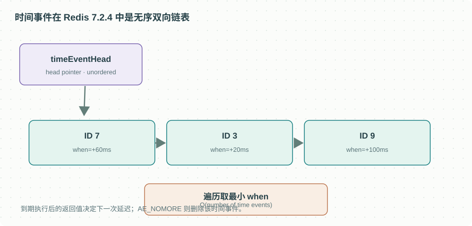
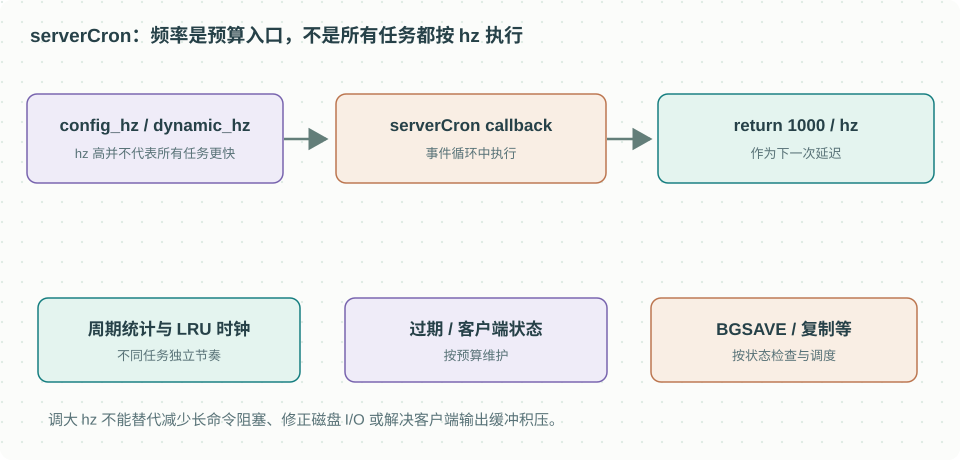

Chapter 14 / Redis 7.2.4 Source Anatomy
时间事件与 serverCron：周期维护如何嵌入主循环
依据 ae.c 的无序定时链表、serverCron 的 dynamic-hz 与 beforeSleep/afterSleep 的真实次序，解释超时和周期工作的成本边界。
没有新连接时，Redis 为什么还会定时工作？
即使没有任何客户端请求，Redis 仍需要周期性更新时间缓存和统计、检查部分过期键、处理客户端超时、推进某些持久化和复制维护状态。单纯使用“fd 变为可读才执行”无法覆盖这类任务。Redis 的事件循环还支持时间事件：在指定时间到期时调用回调，然后根据回调返回值重新安排下一次执行。
这套机制的结构在 Redis 7.2.4 中非常具体：aeEventLoop.timeEventHead 指向一条时间事件双向链表。注册一个时间事件会把新节点插入链表头，事件存储 when（单调时钟微秒期限）、回调、最终清理函数和 ID。它不是当前版本中的二叉最小堆。
时间事件链表：扫描最早期限不是 O(log n)

在 ae.c 中，aeCreateTimeEvent() 分配新的 aeTimeEvent 并插到表头。usUntilEarliestTimer() 顺着链表遍历，找出仍有效且期限最早的事件，然后计算距现在还剩多少微秒；源码注释明确该查找是 O(N)，因为事件没有按期限排序。
processTimeEvents() 同样遍历链表处理到期事件。回调返回非 AE_NOMORE 的延时值（毫秒）时，新的期限从本次执行后记录的单调时钟加上延迟计算；返回 AE_NOMORE 时将该事件标记删除。递归调用期间有 refcount 防护，不会简单地“遍历时立刻 free 掉正在被引用的事件”。
/* Redis 7.2.4 关键字段，省略部分注释 */
typedef struct aeTimeEvent {
long long id;
monotime when; /* 单调微秒时间基准 */
aeTimeProc *timeProc;
aeEventFinalizerProc *finalizerProc;
void *clientData;
struct aeTimeEvent *prev, *next;
int refcount;
} aeTimeEvent;为什么可以接受线性查找？Redis 的通用时间事件数量通常相对有限，设计不必为了大量定时任务引入额外堆管理成本。不过“当前数据结构合适”不等于所有可能的 Redis 模块和负载下 O(N) 都免费；应结合真实的时间事件数与延迟测量。
serverCron：一个周期回调，里面有不同频率的工作
serverCron() 在 server.c 是 Redis 核心周期工作入口。它参与时间/统计更新、慢速主动过期、客户端状态维护、复制和持久化相关调度等。它并不意味着“每一次 serverCron 都对所有键检查 TTL”，也不能认为每次 BGSAVE 都由一个 cron 回调直接执行完毕。

Redis 7.2.4 的 serverCron 先从 server.config_hz 取得基线频率，若启用 dynamic_hz，则依据客户端数和每 tick 容许处理量按需提高 server.hz（受 CONFIG_MAX_HZ 限制）。它的返回值是 1000 / server.hz 的毫秒数，供时间事件系统安排下一次调用。内部通过 run_with_period(milliseconds) 让部分子任务不必跟随每次 tick 都执行。
/* 教学式控制流：只保留频率相关路径 */
serverCron(eventLoop, id, data):
server.hz = server.config_hz
if (server.dynamic_hz):
adjust_hz_for_client_count()
run_periodic_maintenance_with_budgets()
return 1000 / server.hz // 下次回调的目标间隔 ms调大 hz 会改变一些周期性工作被调度的频率，但不会把慢命令变成快命令，也不保证过期键恰好在其 TTL 毫秒到达时即时物理删除。Key 的惰性过期与主动过期、RDB 子进程/持久化后台 I/O 是不同机制，需要分别观察。
演示静态机制与取舍，不调用 Redis 服务器。
beforeSleep / afterSleep 不是“进入睡眠的空白时间”
理解事件循环真实次序：aeProcessEvents() 在调用多路复用 poll 前运行 beforeSleep()，在 poll 返回后、即将分发 fd 回调之前运行 afterSleep()。beforeSleep() 在 Redis 7.2.4 中有具体工作：处理待消费的线程化读数据、TLS pending 数据、Cluster 状态、blockedBeforeSleep()、快速过期周期以及 AOF/回复输出等。它不是只有一个“准备睡觉”日志函数。
前一章的 BLPOP 例子尤其关键：列表写入时将 key 标记为 ready，某些已阻塞客户端的服务工作在 blockedBeforeSleep() 期间进行。因而“唤醒列表消费者”既不是由系统定时器每秒扫一次，也不是完全在 LPUSH 的数据结构函数里同步发回结果。
| 位置 | 示例任务 | 误解风险 |
|---|---|---|
beforeSleep | 待处理读、ready key、快过期、回复输出/AOF 相关步骤 | 不是空函数，也不只执行一次 |
aeApiPoll | 按最早时间事件 / fd 就绪等待 | 不是忙等或对每个 fd 反复 read |
afterSleep | 恢复/统计事件循环相关状态、时间缓存 | 不是与 cron 等价的线程 |
processTimeEvents | 执行已经到期的时间事件，如 serverCron | 没有保证每个 timer 绝对精准准时 |
TTL 到 0，为什么键可能还暂时占内存？
命令层检查一个键时可以按其 TTL 做惰性过期，Redis 还通过主动过期周期批量扫描部分到期键。如果键已到期、但长期没有被访问，并且主动过期周期尚未选中它，它可能暂时占据物理内存。TTL 在应用语义上变为无效与底层对象何时释放，是两个相关但并不总是同时发生的时间点。
serverCron 和 beforeSleep() 都可能参与主动过期相关的不同周期，读取 expire.c 的 activeExpireCycle() 时应分清 ACTIVE_EXPIRE_CYCLE_SLOW 与 ACTIVE_EXPIRE_CYCLE_FAST 路径、CPU 时间预算及调用条件。因此不要把“调大 hz”直接解释成“Redis 的过期精度被线性提高”。
可复现实验：读取 hz、调整参数、观察统计
下面用独立测试实例观察配置与过期行为。注意 CONFIG SET 会改变当前实例；不要在生产环境直接复制。示例先读回原有 hz，再做有界修改并还原。
./src/redis-server --bind 127.0.0.1 --port 6390 --save "" --appendonly no
old_hz=$(./src/redis-cli -p 6390 --raw CONFIG GET hz | tail -1)
./src/redis-cli -p 6390 CONFIG GET dynamic-hz
./src/redis-cli -p 6390 CONFIG GET hz
./src/redis-cli -p 6390 CONFIG SET hz 20
./src/redis-cli -p 6390 SET timer:key value PX 250
./src/redis-cli -p 6390 PTTL timer:key
sleep 1
./src/redis-cli -p 6390 GET timer:key
./src/redis-cli -p 6390 CONFIG SET hz "$old_hz"
./src/redis-cli -p 6390 SHUTDOWN NOSAVEPTTL 初次读取通常为不超过 250ms 的正值，睡眠 1 秒后 GET 应返回 Null。该实验验证对外的过期语义，不足以推断对象刚好在哪个微秒被主动释放。dynamic-hz 可能让实际运行频率高于静态配置，所以也不能把 hz=20 当成强制恰好每 50ms 执行一次。
从“周期任务”到“系统时延”：排查顺序
遇到某个 Redis 实例偶发延迟，不应该先盲目提高 hz。先检查耗时命令/脚本、响应量、客户端输出缓冲、系统 I/O 以及 fork 相关活动，再结合 INFO、SLOWLOG、LATENCY 等工具定位。如果时间事件处理过慢，可能拖延其后的文件事件；如果某个文件回调长时间占用主线程，也会反过来延后定时事件。二者分享主执行路径，就必须理解它们的相互影响。
下一章继续追踪网络层：连接抽象如何让 TCP/TLS/Unix 使用统一接口、I/O 线程在 7.2.4 究竟并行了哪一部分工作，以及回复缓冲如何调度可写回调。
固定版本源码与参考
源码链接锁定 Redis 7.2.4；操作系统选择、运行配置、工作负载及后续 Redis 版本均可能改变部分细节。